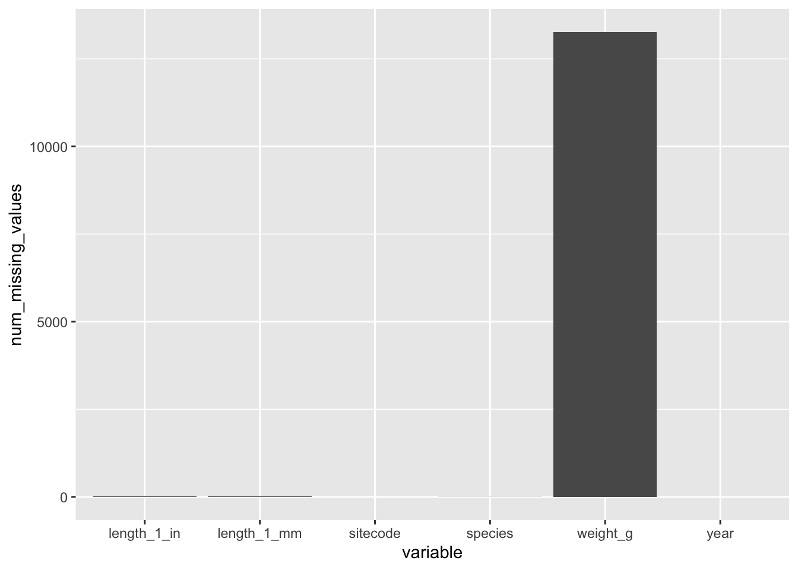
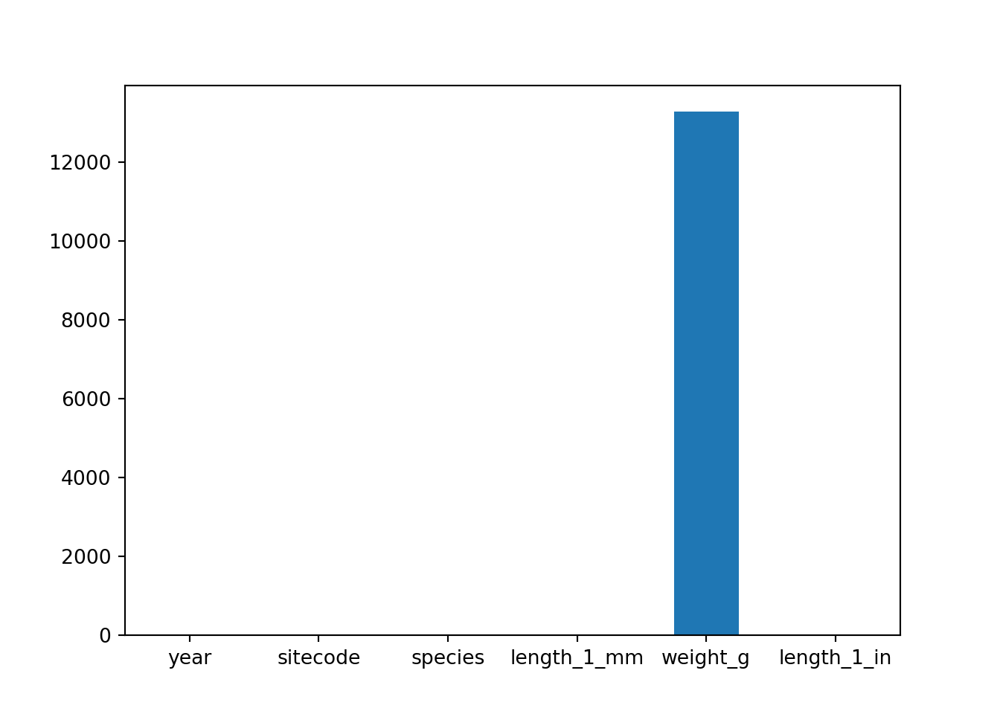
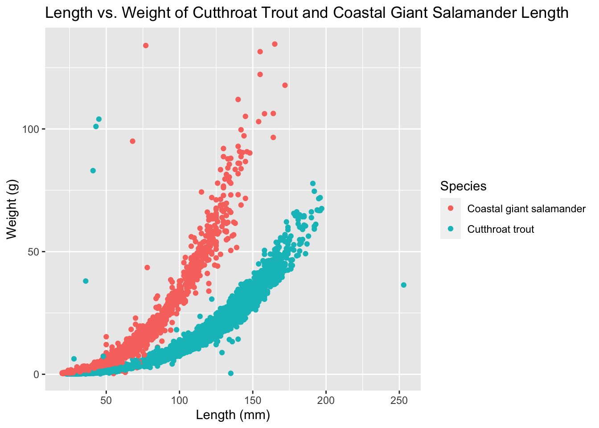
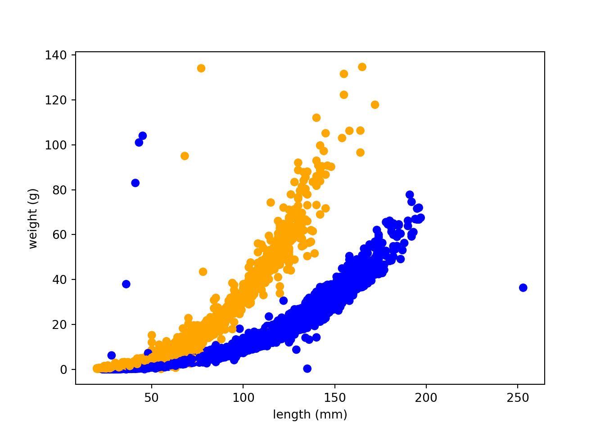
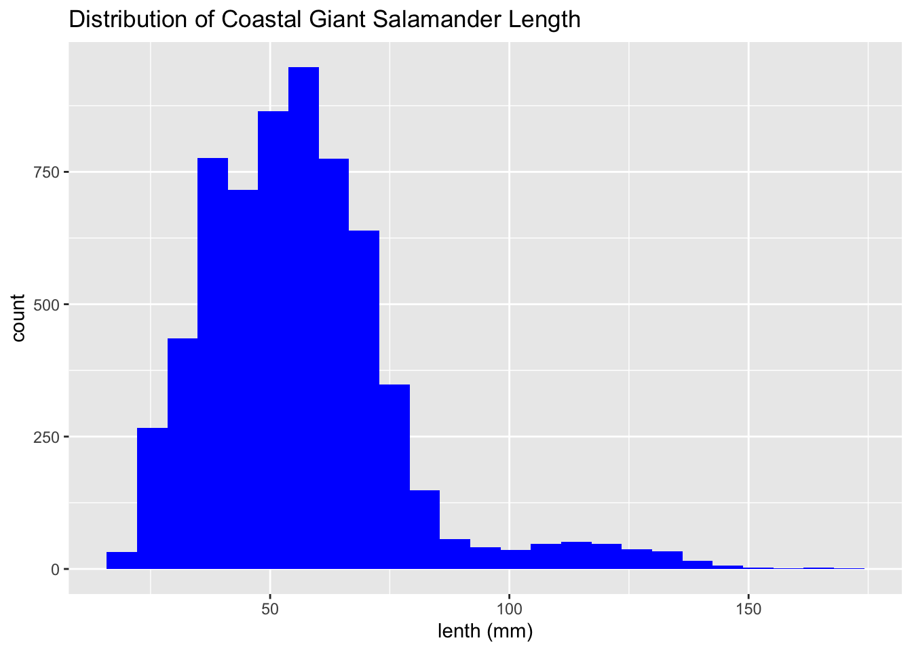
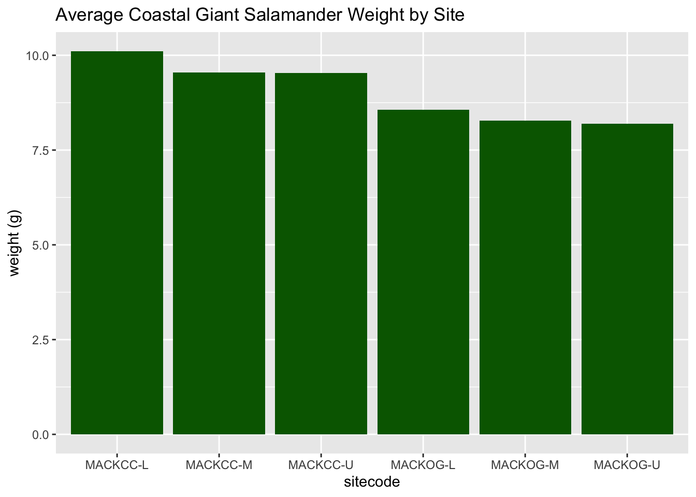
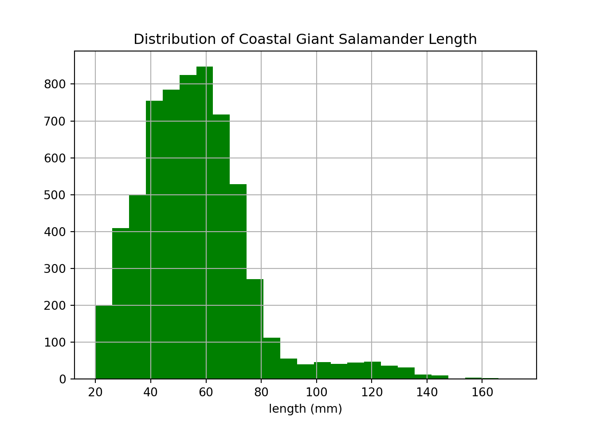
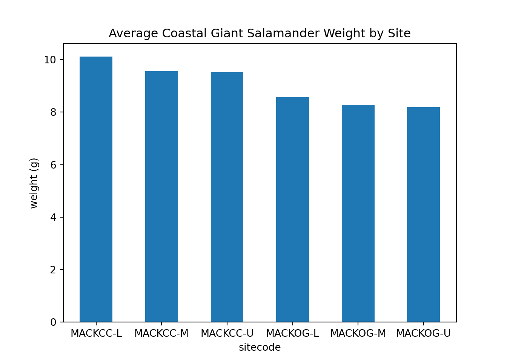
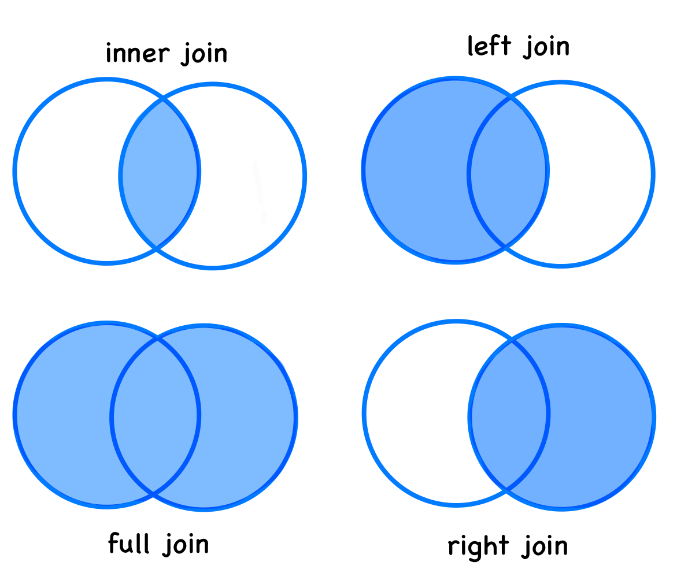

library(tidyverse)
library(lterdatasampler)
trout_salamander_R <- and_vertebratesThe purpose of this document is to illustrate common data wrangling commands with R and Python. These examples use data from the lterdatasampler package.
Basics
The and_vertebrates dataset includes trout and salamander observations from Mack Creek which is part of the Andrews Forest LTER.
import pandas as pd
trout_salamander_py = pd.read_csv('data/and_vertebrates.csv')Head and Tail
Head returns the first few rows of the data frame and tail returns the last rows. The integer in the examples below is optional and used to specify the number of rows returned.
head(trout_salamander_R, 5) # include an integrer is you want to specify the number of rows returned# A tibble: 5 × 16
year sitecode section reach pass unitnum unittype vert_index pitnumber
<dbl> <chr> <chr> <chr> <dbl> <dbl> <chr> <dbl> <dbl>
1 1987 MACKCC-L CC L 1 1 R 1 NA
2 1987 MACKCC-L CC L 1 1 R 2 NA
3 1987 MACKCC-L CC L 1 1 R 3 NA
4 1987 MACKCC-L CC L 1 1 R 4 NA
5 1987 MACKCC-L CC L 1 1 R 5 NA
# … with 7 more variables: species <chr>, length_1_mm <dbl>, length_2_mm <dbl>,
# weight_g <dbl>, clip <chr>, sampledate <date>, notes <chr>tail(trout_salamander_R)# A tibble: 6 × 16
year sitecode section reach pass unitnum unittype vert_index pitnumber
<dbl> <chr> <chr> <chr> <dbl> <dbl> <chr> <dbl> <dbl>
1 2019 MACKOG-U OG U 2 16 C 21 NA
2 2019 MACKOG-U OG U 2 16 C 22 NA
3 2019 MACKOG-U OG U 2 16 C 23 1043503
4 2019 MACKOG-U OG U 2 16 C 24 1043547
5 2019 MACKOG-U OG U 2 16 C 25 1043583
6 2019 MACKOG-U OG U 2 16 C 26 1043500
# … with 7 more variables: species <chr>, length_1_mm <dbl>, length_2_mm <dbl>,
# weight_g <dbl>, clip <chr>, sampledate <date>, notes <chr>trout_salamander_py.head(5) # include an integrer is you want to specify the number of rows returned year sitecode section reach ... weight_g clip sampledate notes
0 1987 MACKCC-L CC L ... 1.75 NONE 1987-10-07 NaN
1 1987 MACKCC-L CC L ... 1.95 NONE 1987-10-07 NaN
2 1987 MACKCC-L CC L ... 5.60 NONE 1987-10-07 NaN
3 1987 MACKCC-L CC L ... 2.15 NONE 1987-10-07 NaN
4 1987 MACKCC-L CC L ... 6.90 NONE 1987-10-07 NaN
[5 rows x 16 columns]trout_salamander_py.tail() year sitecode section reach ... weight_g clip sampledate notes
32204 2019 MACKOG-U OG U ... 7.9 NONE 2019-09-05 NaN
32205 2019 MACKOG-U OG U ... 8.7 NONE 2019-09-05 NaN
32206 2019 MACKOG-U OG U ... 9.6 NONE 2019-09-05 NaN
32207 2019 MACKOG-U OG U ... 14.3 NONE 2019-09-05 NaN
32208 2019 MACKOG-U OG U ... 11.6 NONE 2019-09-05 Terrestrial
[5 rows x 16 columns]Class / Type
class(trout_salamander_R)[1] "tbl_df" "tbl" "data.frame"print(type(trout_salamander_py))<class 'pandas.core.frame.DataFrame'>Shape
Here R and Python both tell us that the dataframe has 32,209 rows and 16 columns.
Note
How to format inline code to include a comma for the thousands separator.
r format(round(trout_salamander_nrow), big.mark=‘,’)
dim(trout_salamander_R) # returns the number of rows and columns in a data frame[1] 32209 16nrow(trout_salamander_R)[1] 32209ncol(trout_salamander_R)[1] 16trout_salamander_py.shape(32209, 16)trout_salamander_py.shape[0] # number of rows32209trout_salamander_py.shape[1] # number of columns16Summary / Describe
summary(trout_salamander_R) year sitecode section reach
Min. :1987 Length:32209 Length:32209 Length:32209
1st Qu.:1998 Class :character Class :character Class :character
Median :2006 Mode :character Mode :character Mode :character
Mean :2005
3rd Qu.:2012
Max. :2019
pass unitnum unittype vert_index
Min. :1.000 Min. : 1.000 Length:32209 Min. : 1.00
1st Qu.:1.000 1st Qu.: 3.000 Class :character 1st Qu.: 5.00
Median :1.000 Median : 7.000 Mode :character Median : 13.00
Mean :1.224 Mean : 7.696 Mean : 20.17
3rd Qu.:1.000 3rd Qu.:11.000 3rd Qu.: 27.00
Max. :2.000 Max. :20.000 Max. :147.00
pitnumber species length_1_mm length_2_mm
Min. : 62048 Length:32209 Min. : 19.00 Min. : 28.0
1st Qu.:13713632 Class :character 1st Qu.: 47.00 1st Qu.: 77.0
Median :18570447 Mode :character Median : 63.00 Median : 98.0
Mean :16286432 Mean : 73.83 Mean :100.5
3rd Qu.:19132429 3rd Qu.: 97.00 3rd Qu.:119.0
Max. :28180046 Max. :253.00 Max. :284.0
NA's :26574 NA's :17 NA's :19649
weight_g clip sampledate notes
Min. : 0.090 Length:32209 Min. :1987-10-06 Length:32209
1st Qu.: 1.510 Class :character 1st Qu.:1998-09-04 Class :character
Median : 6.050 Mode :character Median :2006-09-06 Mode :character
Mean : 8.903 Mean :2005-08-05
3rd Qu.: 11.660 3rd Qu.:2012-09-05
Max. :134.590 Max. :2019-09-05
NA's :13268 trout_salamander_py.describe() year pass ... length_2_mm weight_g
count 32209.000000 32209.000000 ... 12560.000000 18941.000000
mean 2004.917601 1.223664 ... 100.485191 8.902859
std 8.572474 0.416706 ... 34.736955 10.676276
min 1987.000000 1.000000 ... 28.000000 0.090000
25% 1998.000000 1.000000 ... 77.000000 1.510000
50% 2006.000000 1.000000 ... 98.000000 6.050000
75% 2012.000000 1.000000 ... 119.000000 11.660000
max 2019.000000 2.000000 ... 284.000000 134.590000
[8 rows x 8 columns]trout_salamander_py.info()<class 'pandas.core.frame.DataFrame'>
RangeIndex: 32209 entries, 0 to 32208
Data columns (total 16 columns):
# Column Non-Null Count Dtype
--- ------ -------------- -----
0 year 32209 non-null int64
1 sitecode 32209 non-null object
2 section 32209 non-null object
3 reach 32209 non-null object
4 pass 32209 non-null int64
5 unitnum 32209 non-null float64
6 unittype 31599 non-null object
7 vert_index 32209 non-null int64
8 pitnumber 5635 non-null float64
9 species 32206 non-null object
10 length_1_mm 32192 non-null float64
11 length_2_mm 12560 non-null float64
12 weight_g 18941 non-null float64
13 clip 32209 non-null object
14 sampledate 32209 non-null object
15 notes 3174 non-null object
dtypes: float64(5), int64(3), object(8)
memory usage: 3.9+ MBVariable Names
names(trout_salamander_R) # returns column names of a data frame [1] "year" "sitecode" "section" "reach" "pass"
[6] "unitnum" "unittype" "vert_index" "pitnumber" "species"
[11] "length_1_mm" "length_2_mm" "weight_g" "clip" "sampledate"
[16] "notes" trout_salamander_py.columnsIndex(['year', 'sitecode', 'section', 'reach', 'pass', 'unitnum', 'unittype',
'vert_index', 'pitnumber', 'species', 'length_1_mm', 'length_2_mm',
'weight_g', 'clip', 'sampledate', 'notes'],
dtype='object')Unique
Get the unique values from a specified column in a dataframe
unique(trout_salamander_R$species)[1] "Cutthroat trout" NA
[3] "Coastal giant salamander" "Cascade torrent salamander"trout_salamander_py.species.unique()array(['Cutthroat trout', nan, 'Coastal giant salamander',
'Cascade torrent salamander'], dtype=object)Selecting Columns
Subset a datafame based on columns of interst
trout_salamander_R <- trout_salamander_R %>%
select(year, sitecode, species, length_1_mm, weight_g)
trout_salamander_R# A tibble: 32,209 × 5
year sitecode species length_1_mm weight_g
<dbl> <chr> <chr> <dbl> <dbl>
1 1987 MACKCC-L Cutthroat trout 58 1.75
2 1987 MACKCC-L Cutthroat trout 61 1.95
3 1987 MACKCC-L Cutthroat trout 89 5.6
4 1987 MACKCC-L Cutthroat trout 58 2.15
5 1987 MACKCC-L Cutthroat trout 93 6.9
6 1987 MACKCC-L Cutthroat trout 86 5.9
7 1987 MACKCC-L Cutthroat trout 107 10.5
8 1987 MACKCC-L Cutthroat trout 131 20.6
9 1987 MACKCC-L Cutthroat trout 103 9.55
10 1987 MACKCC-L Cutthroat trout 117 13
# … with 32,199 more rowstrout_salamander_py = trout_salamander_py[['year', 'sitecode', 'species', 'length_1_mm', 'weight_g']]
trout_salamander_py year sitecode species length_1_mm weight_g
0 1987 MACKCC-L Cutthroat trout 58.0 1.75
1 1987 MACKCC-L Cutthroat trout 61.0 1.95
2 1987 MACKCC-L Cutthroat trout 89.0 5.60
3 1987 MACKCC-L Cutthroat trout 58.0 2.15
4 1987 MACKCC-L Cutthroat trout 93.0 6.90
... ... ... ... ... ...
32204 2019 MACKOG-U Coastal giant salamander 58.0 7.90
32205 2019 MACKOG-U Coastal giant salamander 65.0 8.70
32206 2019 MACKOG-U Coastal giant salamander 67.0 9.60
32207 2019 MACKOG-U Coastal giant salamander 74.0 14.30
32208 2019 MACKOG-U Coastal giant salamander 73.0 11.60
[32209 rows x 5 columns]or…
cols_to_subset = ['year', 'sitecode', 'species', 'length_1_mm', 'weight_g']
trout_salamander_py[cols_to_subset] year sitecode species length_1_mm weight_g
0 1987 MACKCC-L Cutthroat trout 58.0 1.75
1 1987 MACKCC-L Cutthroat trout 61.0 1.95
2 1987 MACKCC-L Cutthroat trout 89.0 5.60
3 1987 MACKCC-L Cutthroat trout 58.0 2.15
4 1987 MACKCC-L Cutthroat trout 93.0 6.90
... ... ... ... ... ...
32204 2019 MACKOG-U Coastal giant salamander 58.0 7.90
32205 2019 MACKOG-U Coastal giant salamander 65.0 8.70
32206 2019 MACKOG-U Coastal giant salamander 67.0 9.60
32207 2019 MACKOG-U Coastal giant salamander 74.0 14.30
32208 2019 MACKOG-U Coastal giant salamander 73.0 11.60
[32209 rows x 5 columns]New Columns
Convert the length variable from milimeters to inches and store these values in a new column
trout_salamander_R <- trout_salamander_R %>%
mutate(length_1_in = length_1_mm / 25.4)
trout_salamander_R# A tibble: 32,209 × 6
year sitecode species length_1_mm weight_g length_1_in
<dbl> <chr> <chr> <dbl> <dbl> <dbl>
1 1987 MACKCC-L Cutthroat trout 58 1.75 2.28
2 1987 MACKCC-L Cutthroat trout 61 1.95 2.40
3 1987 MACKCC-L Cutthroat trout 89 5.6 3.50
4 1987 MACKCC-L Cutthroat trout 58 2.15 2.28
5 1987 MACKCC-L Cutthroat trout 93 6.9 3.66
6 1987 MACKCC-L Cutthroat trout 86 5.9 3.39
7 1987 MACKCC-L Cutthroat trout 107 10.5 4.21
8 1987 MACKCC-L Cutthroat trout 131 20.6 5.16
9 1987 MACKCC-L Cutthroat trout 103 9.55 4.06
10 1987 MACKCC-L Cutthroat trout 117 13 4.61
# … with 32,199 more rowstrout_salamander_py['length_1_in'] = trout_salamander_py['length_1_mm'] / 25.4
trout_salamander_py year sitecode ... weight_g length_1_in
0 1987 MACKCC-L ... 1.75 2.283465
1 1987 MACKCC-L ... 1.95 2.401575
2 1987 MACKCC-L ... 5.60 3.503937
3 1987 MACKCC-L ... 2.15 2.283465
4 1987 MACKCC-L ... 6.90 3.661417
... ... ... ... ... ...
32204 2019 MACKOG-U ... 7.90 2.283465
32205 2019 MACKOG-U ... 8.70 2.559055
32206 2019 MACKOG-U ... 9.60 2.637795
32207 2019 MACKOG-U ... 14.30 2.913386
32208 2019 MACKOG-U ... 11.60 2.874016
[32209 rows x 6 columns]Missing Values
Get the number of missing values for all variables in the dataframe
colSums(is.na(trout_salamander_R)) year sitecode species length_1_mm weight_g length_1_in
0 0 3 17 13268 17 Get the number of NAs for only variables with missing values
which(colSums(is.na(trout_salamander_R))>0) species length_1_mm weight_g length_1_in
3 4 5 6 Get the names of variables with missing values
names(which(colSums(is.na(trout_salamander_R))>0))[1] "species" "length_1_mm" "weight_g" "length_1_in"Show variables with missing values on a bar chart
missing_values_R <- data.frame(colSums(is.na(trout_salamander_R))) %>%
rownames_to_column("variable")
names(missing_values_R) <- c(
"variable",
"num_missing_values"
)
ggplot(data = missing_values_R, aes(x = variable, y = num_missing_values)) +
geom_col()
Drop missing values
trout_salamander_R <- trout_salamander_R %>%
drop_na(length_1_mm, weight_g)
# if columns aren't specified, then all variables are selected
# drop_na()Identify which columns in the dataframe have missings values
trout_salamander_py.isna().any()year False
sitecode False
species True
length_1_mm True
weight_g True
length_1_in True
dtype: boolGet the number of NaNs for all variables in the dataframe
trout_salamander_py.isna().sum()year 0
sitecode 0
species 3
length_1_mm 17
weight_g 13268
length_1_in 17
dtype: int64Show variables with missing values on a bar chart
import matplotlib.pyplot as plt
trout_salamander_py.isna().sum().plot(kind='bar', rot=0)
plt.show()
Drop missing values
trout_salamander_py = trout_salamander_py.dropna(subset=['length_1_mm', 'weight_g'])
# if subset variables aren't specified, rows with any NaN value will be dropped
# trout_salamander_py = trout_salamander_py.dropna()Sorting
Order rows in a dataframe based on values in a specified column. Default is ascending order.
trout_salamander_R %>%
arrange(length_1_mm)# A tibble: 18,930 × 6
year sitecode species length_1_mm weight_g length_1_in
<dbl> <chr> <chr> <dbl> <dbl> <dbl>
1 1995 MACKOG-L Coastal giant salamander 20 0.6 0.787
2 2009 MACKOG-L Coastal giant salamander 20 0.35 0.787
3 2010 MACKCC-U Coastal giant salamander 20 0.49 0.787
4 1994 MACKCC-L Coastal giant salamander 21 0.6 0.827
5 1994 MACKOG-L Coastal giant salamander 21 0.4 0.827
6 2009 MACKOG-L Coastal giant salamander 21 0.36 0.827
7 2009 MACKOG-L Coastal giant salamander 21 0.36 0.827
8 2009 MACKOG-L Coastal giant salamander 21 0.33 0.827
9 2009 MACKOG-L Coastal giant salamander 21 0.39 0.827
10 2009 MACKOG-L Coastal giant salamander 21 0.31 0.827
# … with 18,920 more rowstrout_salamander_py.sort_values("length_1_mm") year sitecode ... weight_g length_1_in
21639 2010 MACKCC-U ... 0.49 0.787402
5141 1995 MACKOG-L ... 0.60 0.787402
20497 2009 MACKOG-L ... 0.35 0.787402
23424 2011 MACKOG-M ... 0.37 0.826772
4499 1994 MACKOG-L ... 0.40 0.826772
... ... ... ... ... ...
1983 1991 MACKCC-M ... 66.75 7.677165
25311 2013 MACKCC-M ... 72.00 7.716535
3859 1994 MACKCC-L ... 66.74 7.716535
19882 2009 MACKCC-M ... 67.54 7.755906
18450 2008 MACKCC-L ... 36.40 9.960630
[18930 rows x 6 columns]Sort values by descending order
trout_salamander_R %>%
arrange(desc(length_1_mm))# A tibble: 18,930 × 6
year sitecode species length_1_mm weight_g length_1_in
<dbl> <chr> <chr> <dbl> <dbl> <dbl>
1 2008 MACKCC-L Cutthroat trout 253 36.4 9.96
2 2009 MACKCC-M Cutthroat trout 197 67.5 7.76
3 1994 MACKCC-L Cutthroat trout 196 66.7 7.72
4 2013 MACKCC-M Cutthroat trout 196 72 7.72
5 1991 MACKCC-M Cutthroat trout 195 66.8 7.68
6 2019 MACKCC-M Cutthroat trout 195 71.6 7.68
7 1992 MACKCC-M Cutthroat trout 194 66.9 7.64
8 2009 MACKCC-L Cutthroat trout 194 67.0 7.64
9 1992 MACKOG-M Cutthroat trout 193 61.1 7.60
10 1992 MACKCC-L Cutthroat trout 192 59.2 7.56
# … with 18,920 more rowstrout_salamander_py.sort_values("length_1_mm", ascending=False) year sitecode ... weight_g length_1_in
18450 2008 MACKCC-L ... 36.40 9.960630
19882 2009 MACKCC-M ... 67.54 7.755906
25311 2013 MACKCC-M ... 72.00 7.716535
3859 1994 MACKCC-L ... 66.74 7.716535
1983 1991 MACKCC-M ... 66.75 7.677165
... ... ... ... ... ...
23272 2011 MACKOG-M ... 0.35 0.826772
23424 2011 MACKOG-M ... 0.37 0.826772
5141 1995 MACKOG-L ... 0.60 0.787402
20497 2009 MACKOG-L ... 0.35 0.787402
21639 2010 MACKCC-U ... 0.49 0.787402
[18930 rows x 6 columns]Sort values by multiple variables
trout_salamander_R %>%
arrange(length_1_mm, weight_g, year)# A tibble: 18,930 × 6
year sitecode species length_1_mm weight_g length_1_in
<dbl> <chr> <chr> <dbl> <dbl> <dbl>
1 2009 MACKOG-L Coastal giant salamander 20 0.35 0.787
2 2010 MACKCC-U Coastal giant salamander 20 0.49 0.787
3 1995 MACKOG-L Coastal giant salamander 20 0.6 0.787
4 2012 MACKOG-U Coastal giant salamander 21 0.3 0.827
5 2009 MACKOG-L Coastal giant salamander 21 0.31 0.827
6 2009 MACKOG-L Coastal giant salamander 21 0.33 0.827
7 2011 MACKOG-M Coastal giant salamander 21 0.35 0.827
8 2009 MACKOG-L Coastal giant salamander 21 0.36 0.827
9 2009 MACKOG-L Coastal giant salamander 21 0.36 0.827
10 2011 MACKOG-M Coastal giant salamander 21 0.37 0.827
# … with 18,920 more rowstrout_salamander_py.sort_values(['length_1_mm', 'weight_g', 'year']) year sitecode ... weight_g length_1_in
20497 2009 MACKOG-L ... 0.35 0.787402
21639 2010 MACKCC-U ... 0.49 0.787402
5141 1995 MACKOG-L ... 0.60 0.787402
24854 2012 MACKOG-U ... 0.30 0.826772
20579 2009 MACKOG-L ... 0.31 0.826772
... ... ... ... ... ...
31590 2019 MACKCC-M ... 71.60 7.677165
3859 1994 MACKCC-L ... 66.74 7.716535
25311 2013 MACKCC-M ... 72.00 7.716535
19882 2009 MACKCC-M ... 67.54 7.755906
18450 2008 MACKCC-L ... 36.40 9.960630
[18930 rows x 6 columns]Filtering
Create datasets of all cutthroat trout
trout_R <- trout_salamander_R %>%
filter(species == 'Cutthroat trout')trout_py = trout_salamander_py[ (trout_salamander_py['species'] == 'Cutthroat trout') ]Filter data based on values and logical arguments. This example filters for cutthroat trout that are longer than 86 mm.
large_trout_R <- trout_salamander_R %>%
filter(species == 'Cutthroat trout') %>%
filter(length_1_mm > 86)
large_trout_R# A tibble: 6,101 × 6
year sitecode species length_1_mm weight_g length_1_in
<dbl> <chr> <chr> <dbl> <dbl> <dbl>
1 1987 MACKCC-L Cutthroat trout 89 5.6 3.50
2 1987 MACKCC-L Cutthroat trout 93 6.9 3.66
3 1987 MACKCC-L Cutthroat trout 107 10.5 4.21
4 1987 MACKCC-L Cutthroat trout 131 20.6 5.16
5 1987 MACKCC-L Cutthroat trout 103 9.55 4.06
6 1987 MACKCC-L Cutthroat trout 117 13 4.61
7 1987 MACKCC-L Cutthroat trout 100 8.25 3.94
8 1987 MACKCC-L Cutthroat trout 127 17.7 5
9 1987 MACKCC-L Cutthroat trout 99 8.15 3.90
10 1987 MACKCC-L Cutthroat trout 111 11.2 4.37
# … with 6,091 more rowsnum_large_trout <- nrow(large_trout_R)trout_salamander_py[ (trout_salamander_py['species'] == 'Cutthroat trout') & (trout_salamander_py['length_1_mm'] > 86) ] year sitecode species length_1_mm weight_g length_1_in
2 1987 MACKCC-L Cutthroat trout 89.0 5.60 3.503937
4 1987 MACKCC-L Cutthroat trout 93.0 6.90 3.661417
6 1987 MACKCC-L Cutthroat trout 107.0 10.50 4.212598
7 1987 MACKCC-L Cutthroat trout 131.0 20.60 5.157480
8 1987 MACKCC-L Cutthroat trout 103.0 9.55 4.055118
... ... ... ... ... ... ...
32172 2019 MACKOG-U Cutthroat trout 145.0 31.80 5.708661
32179 2019 MACKOG-U Cutthroat trout 142.0 29.50 5.590551
32180 2019 MACKOG-U Cutthroat trout 142.0 28.30 5.590551
32186 2019 MACKOG-U Cutthroat trout 118.0 19.80 4.645669
32187 2019 MACKOG-U Cutthroat trout 89.0 7.40 3.503937
[6101 rows x 6 columns]There are 6,101 cutthroat trout longer than 86 mm in this dataset.
Summary Statistics
Note
Even though missing values have been removed in previous steps, the code to exclude NA / NaN values from summary statistics is included here for reference.
Mean
Mean of specified column
mean(trout_R$weight_g, na.rm = TRUE)[1] 8.843582Mean of multiple specified columns
# calculate statistic on multiple columns
trout_R %>%
summarise_at(vars('length_1_mm', 'weight_g'), mean, na.rm = TRUE)# A tibble: 1 × 2
length_1_mm weight_g
<dbl> <dbl>
1 83.0 8.84Mean of all numeric columns
# calculate statistic on all numeric columns
trout_R %>%
summarise(across(where(is.numeric), mean, na.rm = TRUE))# A tibble: 1 × 4
year length_1_mm weight_g length_1_in
<dbl> <dbl> <dbl> <dbl>
1 2005. 83.0 8.84 3.27Median
median(trout_R$weight_g, na.rm = TRUE)[1] 6.15Minimum
min(trout_R$weight_g, na.rm = TRUE)[1] 0.09Maximum
max(trout_R$weight_g, na.rm = TRUE)[1] 104Use var() to calculate the variance of a variable.
Use sd() to calculate the standard deviation of a variable.
Mean
Mean of specified column
trout_py['weight_g'].mean()8.843581639135959Mean of multiple specified columns
# calcuate statistic on multiple columns
trout_py[['length_1_mm', 'weight_g']].mean()length_1_mm 83.029066
weight_g 8.843582
dtype: float64Mean of all numeric columns
# calculate statistic on all numeric columns
trout_py.mean()year 2004.953780
length_1_mm 83.029066
weight_g 8.843582
length_1_in 3.268861
dtype: float64
<string>:1: FutureWarning: Dropping of nuisance columns in DataFrame reductions (with 'numeric_only=None') is deprecated; in a future version this will raise TypeError. Select only valid columns before calling the reduction.Median
trout_py['weight_g'].median()6.15Minimum
trout_py['weight_g'].min()0.09Maximum
trout_py['weight_g'].max()104.0Use .var() to calculate the variance of a variable.
Use .std() to calculate the standard deviation of a variable.
Grouped Statistics
library(kableExtra)
trout_salamander_R %>%
drop_na(length_1_mm, weight_g) %>%
# even though missing values have been removed in previous steps,
# code to exclude NA values from summary statistics is included here for reference.
group_by(sitecode, species) %>%
summarise(mean_length = mean(length_1_mm),
min_length = min(length_1_mm),
max_lenth = max(length_1_mm),
mean_weight = mean(weight_g),
min_weight = min(weight_g),
max_weight = max(weight_g)) %>%
kable(digits=2) %>%
kable_paper()| sitecode | species | mean_length | min_length | max_lenth | mean_weight | min_weight | max_weight |
|---|---|---|---|---|---|---|---|
| MACKCC-L | Cascade torrent salamander | 36.80 | 32 | 40 | 1.32 | 0.80 | 1.95 |
| MACKCC-L | Coastal giant salamander | 59.09 | 21 | 143 | 10.11 | 0.29 | 90.77 |
| MACKCC-L | Cutthroat trout | 78.93 | 24 | 253 | 7.73 | 0.09 | 66.97 |
| MACKCC-M | Coastal giant salamander | 58.08 | 25 | 137 | 9.55 | 0.58 | 85.60 |
| MACKCC-M | Cutthroat trout | 93.11 | 27 | 197 | 11.76 | 0.10 | 77.78 |
| MACKCC-U | Coastal giant salamander | 57.79 | 20 | 154 | 9.53 | 0.42 | 102.99 |
| MACKCC-U | Cutthroat trout | 84.36 | 26 | 192 | 9.14 | 0.10 | 65.00 |
| MACKOG-L | Coastal giant salamander | 53.54 | 20 | 172 | 8.56 | 0.30 | 134.59 |
| MACKOG-L | Cutthroat trout | 81.87 | 25 | 181 | 8.50 | 0.13 | 63.00 |
| MACKOG-M | Cascade torrent salamander | 29.00 | 28 | 30 | 0.73 | 0.65 | 0.80 |
| MACKOG-M | Coastal giant salamander | 54.02 | 21 | 155 | 8.27 | 0.30 | 131.50 |
| MACKOG-M | Cutthroat trout | 79.30 | 23 | 193 | 7.86 | 0.10 | 101.00 |
| MACKOG-U | Cascade torrent salamander | 32.50 | 26 | 39 | 0.85 | 0.50 | 1.20 |
| MACKOG-U | Coastal giant salamander | 54.64 | 21 | 164 | 8.20 | 0.30 | 134.00 |
| MACKOG-U | Cutthroat trout | 81.47 | 25 | 175 | 8.29 | 0.10 | 104.00 |
trout_salamander_py.dropna(subset=['length_1_mm', 'weight_g']) \
.groupby(['sitecode', 'species'])[['length_1_mm', 'weight_g']] \
.agg(['mean', 'min', 'max'])| length_1_mm | weight_g | ||||||
|---|---|---|---|---|---|---|---|
| mean | min | max | mean | min | max | ||
| sitecode | species | ||||||
| MACKCC-L | Cascade torrent salamander | 36.80 | 32.00 | 40.00 | 1.32 | 0.80 | 1.95 |
| Coastal giant salamander | 59.09 | 21.00 | 143.00 | 10.11 | 0.29 | 90.77 | |
| Cutthroat trout | 78.93 | 24.00 | 253.00 | 7.73 | 0.09 | 66.97 | |
| MACKCC-M | Coastal giant salamander | 58.08 | 25.00 | 137.00 | 9.55 | 0.58 | 85.60 |
| Cutthroat trout | 93.11 | 27.00 | 197.00 | 11.76 | 0.10 | 77.78 | |
| MACKCC-U | Coastal giant salamander | 57.79 | 20.00 | 154.00 | 9.53 | 0.42 | 102.99 |
| Cutthroat trout | 84.36 | 26.00 | 192.00 | 9.14 | 0.10 | 65.00 | |
| MACKOG-L | Coastal giant salamander | 53.54 | 20.00 | 172.00 | 8.56 | 0.30 | 134.59 |
| Cutthroat trout | 81.87 | 25.00 | 181.00 | 8.50 | 0.13 | 63.00 | |
| MACKOG-M | Cascade torrent salamander | 29.00 | 28.00 | 30.00 | 0.73 | 0.65 | 0.80 |
| Coastal giant salamander | 54.02 | 21.00 | 155.00 | 8.27 | 0.30 | 131.50 | |
| Cutthroat trout | 79.30 | 23.00 | 193.00 | 7.86 | 0.10 | 101.00 | |
| MACKOG-U | Cascade torrent salamander | 32.50 | 26.00 | 39.00 | 0.85 | 0.50 | 1.20 |
| Coastal giant salamander | 54.64 | 21.00 | 164.00 | 8.20 | 0.30 | 134.00 | |
| Cutthroat trout | 81.47 | 25.00 | 175.00 | 8.29 | 0.10 | 104.00 | |
Visualizations
Scatter Plot
trout_salamander_R <- trout_salamander_R %>%
filter(species %in% c('Cutthroat trout', 'Coastal giant salamander'))
ggplot(data = trout_salamander_R, aes(x = length_1_mm, y = weight_g)) +
geom_point(aes(color = species), show.legend = TRUE) +
labs(x = "Length (mm)",
y = "Weight (g)",
title = "Length vs. Weight of Cutthroat Trout and Coastal Giant Salamander Length",
color = "Species")
trout_salamander_py = trout_salamander_py[trout_salamander_py['species'].isin(['Cutthroat trout','Coastal giant salamander'])]
import matplotlib.pyplot as plt
colors = {'Cutthroat trout':'blue', 'Coastal giant salamander':'orange'}
plt.scatter(x=trout_salamander_py.length_1_mm, y=trout_salamander_py.weight_g,
c= trout_salamander_py.species.apply(lambda x: colors[x]))
plt.xlabel('length (mm)')
plt.ylabel('weight (g)')
plt.show()
Histograms
These histograms show the distribution of coastal giant salamander lenths.
salamander_R <- trout_salamander_R %>%
filter(species == 'Coastal giant salamander')
ggplot(data = salamander_R, aes(x = length_1_mm)) +
geom_histogram(fill = 'blue', bins = 25) +
labs(x = "lenth (mm)",
title = 'Distribution of Coastal Giant Salamander Length')
salamander_py = trout_salamander_py[ (trout_salamander_py['species'] == 'Coastal giant salamander') ]salamander_py['length_1_mm'].hist(bins=25, color='green')
plt.title('Distribution of Coastal Giant Salamander Length')
plt.xlabel('length (mm)')
plt.show()Bar Plots
These bar plots show the averge salamander weight based on site code.
salamander_avg_weight_by_sitecode_R <- salamander_R %>%
group_by(sitecode) %>%
summarise(mean_weight = mean(weight_g, na.rm = TRUE))
ggplot(data = salamander_avg_weight_by_sitecode_R, aes(x = sitecode, y = mean_weight)) +
geom_col(fill = 'darkgreen') +
labs(y = 'weight (g)',
title = 'Average Coastal Giant Salamander Weight by Site')
salamander_avg_weight_by_sitecode_py = salamander_py.groupby('sitecode')['weight_g'].mean()
salamander_avg_weight_by_sitecode_py.plot(kind='bar', rot=0)
plt.title('Average Coastal Giant Salamander Weight by Site')
plt.ylabel('weight (g)')
plt.show()
Line Plots
These line plots show average salamander length over time.
salamander_avg_length_by_year_R <- salamander_R %>%
group_by(year) %>%
summarise(mean_length = mean(length_1_mm, na.rm = TRUE))
ggplot(data = salamander_avg_length_by_year_R, aes(x = year, y = mean_length)) +
geom_line(color = 'red') +
labs(x = 'year',
y = 'length (mm)',
title = 'Average Coastal Giant Salamander Length by Year')salamander_avg_lenth_by_year_py = salamander_py.groupby('year')['length_1_mm'].mean()
salamander_avg_lenth_by_year_py.plot(x='year', y='length_1_mm', kind='line')
plt.title('Average Coastal Giant Salamander Length by Year')
plt.ylabel('length (mm)')
plt.show()
Joining /Merging Data
The examples below use the arc_weather and ntl_airtemp datasets from the lterdatasampler package. Both of these datasets include daily meteorological observations. The arc_weather data incldues daily weather data from the Toolik Field Station at Toolik Lake, Alaska. The ntl_airtemp data includes daily average temperature data from Madison, WI. These datasets are used for the examples in this section because they both have a date field in common that can be used for joins.
Looking at the data, we see that the arc_weather dataset begins on 1988-06-01 and ends on 2018-12-31. The ntl_airtemp dataset has a much longer period of record and begins on 1869-01-01 and ends on 2019-12-31. Also, the ntl_airtemp dataset has a column called sampledate that will have to be renamed to match arc_weather's date column so that both datasets have a common field that can be using for joins.
Types of Joins 
arc_weather_R <- arc_weather %>%
# adding `arc` suffix for clarity when datasets are joined
rename(station_arc = station,
mean_airtemp_arc = mean_airtemp,
daily_precip_arc = daily_precip,
mean_windspeed_arc = mean_windspeed)
head(arc_weather_R, 3)# A tibble: 3 × 5
date station_arc mean_airtemp_arc daily_precip_arc mean_windspeed_…
<date> <chr> <dbl> <dbl> <dbl>
1 1988-06-01 Toolik Field St… 8.4 0 NA
2 1988-06-02 Toolik Field St… 6 0 NA
3 1988-06-03 Toolik Field St… 5.8 0 NAntl_airtemp_R <- ntl_airtemp %>%
# renaming so the data fields in both datasets have the same name
# adding `ntl` suffix for clarity when datasets are joined
rename(date = sampledate,
year_ntl = year,
ave_air_temp_adjusted_ntl = ave_air_temp_adjusted)
head(ntl_airtemp_R, 3)# A tibble: 3 × 3
date year_ntl ave_air_temp_adjusted_ntl
<date> <dbl> <dbl>
1 1870-06-05 1870 20
2 1870-06-06 1870 18.3
3 1870-06-07 1870 17.5Inner join
inner_join_R <- inner_join(arc_weather_R, ntl_airtemp_R, by = "date")Full join
full_join_R <- full_join(arc_weather_R, ntl_airtemp_R, by = "date")Left join
left_join_R <- left_join(arc_weather_R, ntl_airtemp_R, by = "date")Right join
right_join_R <- right_join(arc_weather_R, ntl_airtemp_R, by = "date")Anti join
anti_join_R <- anti_join(arc_weather_R, ntl_airtemp_R, by = "date")arc_weather_py = pd.read_csv('data/arc_weather.csv').rename(columns={"station":"station_arc", "mean_airtemp":"mean_airtemp_arc", "daily_precip":"daily_precip_arc", "mean_windspeed":"mean_windspeed_arc"})
arc_weather_py.head(3) date station_arc ... daily_precip_arc mean_windspeed_arc
0 1988-06-01 Toolik Field Station ... 0.0 NaN
1 1988-06-02 Toolik Field Station ... 0.0 NaN
2 1988-06-03 Toolik Field Station ... 0.0 NaN
[3 rows x 5 columns]ntl_airtemp_py = pd.read_csv(('data/ntl_airtemp.csv')).rename(columns={"sampledate":"date", "year":"year_ntl", "ave_air_temp_adjusted":"ave_air_temp_adjusted_ntl"})
ntl_airtemp_py.head(3) date year_ntl ave_air_temp_adjusted_ntl
0 1870-06-05 1870 20.0
1 1870-06-06 1870 18.3
2 1870-06-07 1870 17.5Inner merge
inner_merge_py = arc_weather_py.merge(ntl_airtemp_py, how='inner', on='date')Full/Outer merge
full_merge_py = arc_weather_py.merge(ntl_airtemp_py, how='outer', on='date')Left merge
left_merge_py = arc_weather_py.merge(ntl_airtemp_py, how='left', on='date')Right merge
right_merge_py = arc_weather_py.merge(ntl_airtemp_py, how='right', on='date')xxx…add images of each species
xxxxx
Heading
Citation
Horst A, Brun J (2022). lterdatasampler: Educational dataset examples from the Long Term Ecological Research program. R package version 0.1.0, https://github.com/lter/lterdatasampler.
Citation
BibTeX citation:
@online{rivers2022,
author = {Marie Rivers},
title = {Data {Wrangling} with {Python} and {R}},
date = {2022-09-23},
url = {https://marierivers.github.io/code_samples/data-wrangling-with-python-and-R/},
langid = {en}
}
For attribution, please cite this work as:
Marie Rivers. 2022. “Data Wrangling with Python and R.”
September 23, 2022. https://marierivers.github.io/code_samples/data-wrangling-with-python-and-R/.